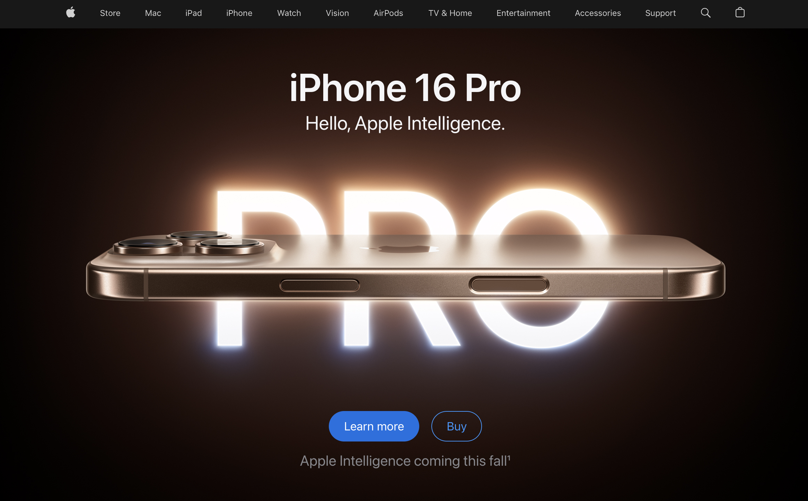
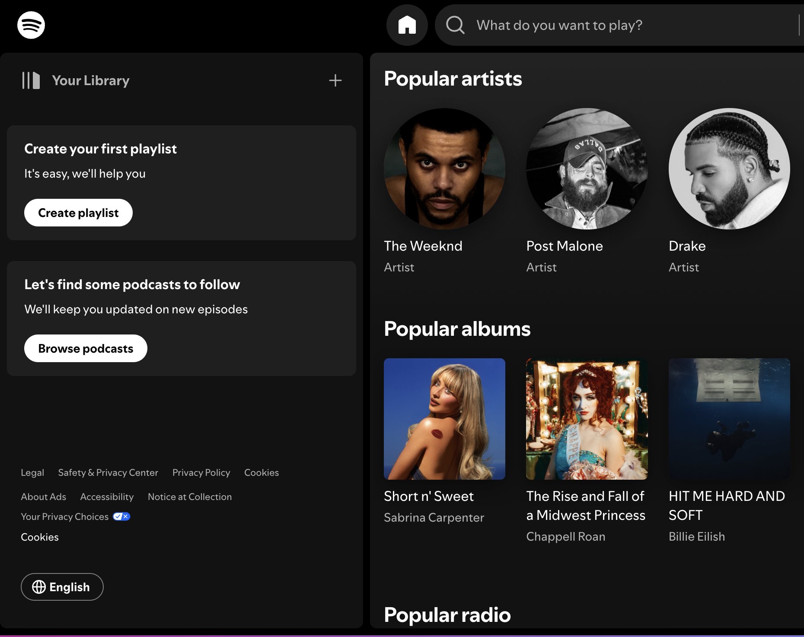

Visual Hierarchy
Apple
Visual Hierarchy On the Apple website, visual hierarchy is established through the use of large, bold typography for headlines and key images. The homepage prominently displays the latest product in large format, guiding the users attention. Subheadings and supporting text are smaller and less prominent, which helps visitors quickly understand the key offerings without feeling overwhelmed.
White Space and Clean Design
Airbnb
2 White Space and Clean Design Airbnb's webpage effectively uses white space to create a clean and uncluttered design. The ample spacing between text, images, and buttons allows users to focus on the content without distractions. This clean layout enhances readability and improves the overall user experience, making it easy for visitors to navigate through listings and information.
Fitt's Law
Spotfy
3 Fitt's Law Spotify's mobile app exemplifies Fitt's Law by placing key controls, like the play button and navigation menu, within easy reach of users thumbs. The buttons are sufficiently large and well-spaced, reducing the time needed to click and improving overall usability. This design consideration enhances user interaction, making it effortless to navigate and control playback.